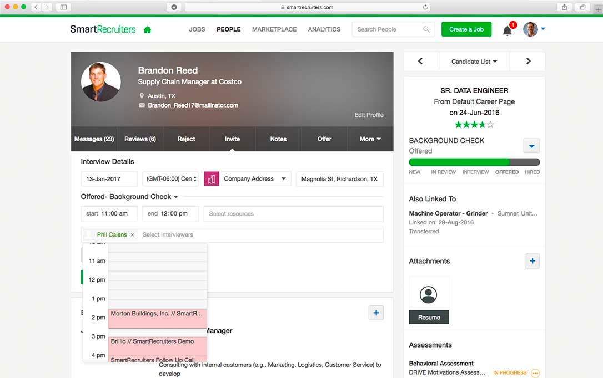
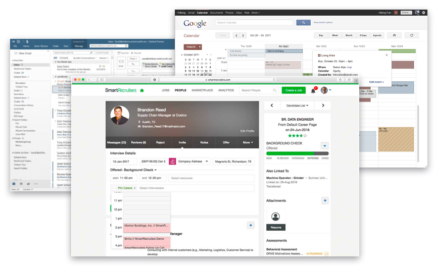
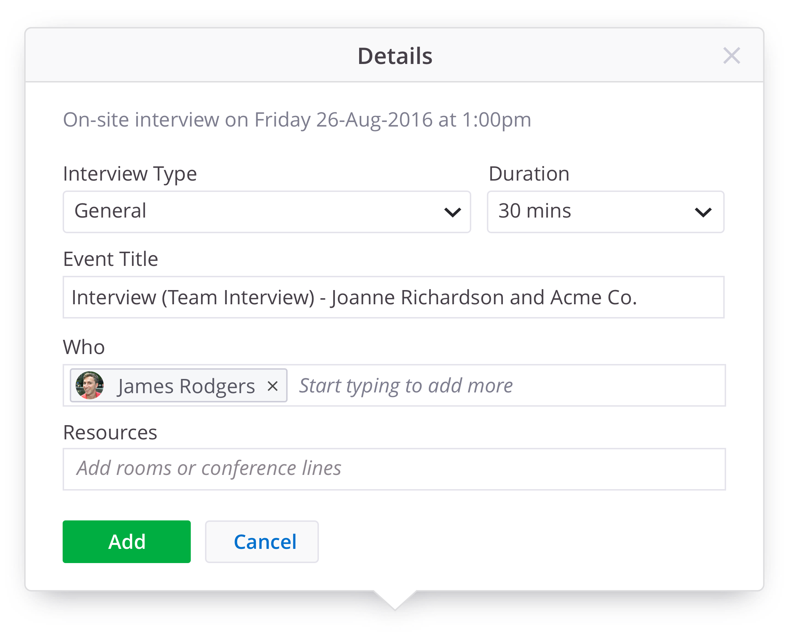
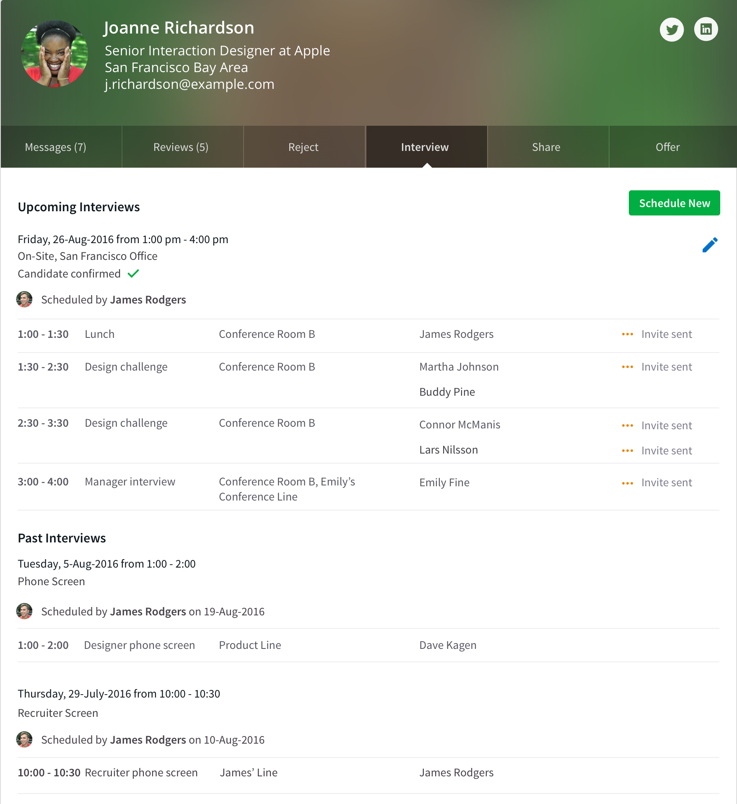

I worked on this project in the summer of 2016 while I was a Product Designer at SmartRecruiters. I was the sole designer, and I worked with the product manager in charge of this feature set (Natalia Baryshnikova). The goal was to improve the experience of our interview scheduling wizard, and we only had a few weeks to achieve this before it went to development. I was also going on vacation 2 weeks before it had to go into development. I wanted to make sure it was done before that with enough time for the dev team to ask questions.
The scheduling wizard was previously limited to a form that users would fill out, which would generate an invitation to the candidate and the interview panel either via SmartRecruiters messaging system, or an integration with Google Calendar or Office 360.
The original scheduling wizard
We wanted to make this feature easier to use, and more delightful. Scheduling interviews is a very common and labor-intensive task in the product, and we wanted to cut out some steps for users.
When I began the project, another designer and the product manager had already done some research, so I took what they had done and conducted some tests of my own.
I began testing internally with our recruiter, observing him schedule interviews with our current scheduling wizard and paying close attention to the pain-points. Over video calls, I watched what our users were doing in their own processes and with their own tools.
I conducted phone calls with our users, asking them questions to determine:
We identified that users often didn’t have each job's hiring team memorized and had to manually check availability in the dropdowns one by one to find a common time. This resulted in users having to leave the product to find the right time and the right people before filling out the form. Usually, users would find a time that worked for everyone involved via Google Calendar or Outlook and then input that information into SmartRecruiters.
Users had to exit SmartRecruiters to schedule via Google or Outlook
Setting up panel interviews was also a challenge for users, since the slots were set up by stage in the hiring process, instead of by times. It’s unlikely that a user would want to schedule an interview in two parts of the hiring process at once.

The slots were tied to steps in the hiring processs
Another issue was that there was no way to see information about past or upcoming interviews within SmartRecruiters. They could only see that an interview had been scheduled, but without any of the details. Furthermore, because the form was always open on the tab, they couldn’t see these details without accidentally scheduling another interview.
Users also wanted control over the title of the interview invite that was sent out to the candidate, as well as visibility of what the candidate would see in the invitation.
In addition to these problems, users wanted to be able to select a type of interview (e.g. lunch interview, office tour, partner coding exercise etc.) and assign it to a group of people in a panel.
Aside from adding the “type” field, we constrained the scope of the project to only UI/UX changes. This is what makes this project so interesting; Just using design thinking, research, and UI design, together with the front end engineer, we made vast improvements to the UX of this feature without having to add any major features.
I began with some low-fidelity wireframes that I tested internally. Once we were happy with a concept, I created a few prototypes using Sketch, Marvel, and InVision and tested them over video calls with some of our users.
We first explored a version that would automatically calculate the time slots available based on some inputs. The user would pick who should be in each slot and the duration of the slot, and then we would show them some times that worked.
A video of Version 1 time suggestion flow
This worked really well for 1:1 interviews, such as recruiter screens or hiring manager interviews, but it was trickier when it came to scheduling panel interviews with multiple interviewers and slots.
When we tested this prototype, we realized that users still had to leave to see which hiring team members were available for a panel interview. Users rarely knew ahead of time exactly which team member should be in which slot, or even who was on the hiring team.
A video of Version 1 calendar flow
It was also hard to visualize the candidate’s availability without seeing a calendar. Because of this, we provided an option to schedule via the time suggestions or with the calendar. In general, users chose to use the calendar option.
The second version was a blank calendar (defaulted to the user’s schedule) where they could see all the hiring team members and their schedules.
A video of Version 2 calendar flow
From watching people use other calendars to schedule panel interviews, I saw that they would begin by looking at all of the team members' calendars at the same time to determine which day might be best. Then, they would remove all of the team members and schedule the panel one slot at a time, scheduling only for the team members whose calendars were exposed. To eliminate a step for the user, we pre-filled the “who” field with the team members whose calendars were exposed.
We also added an extra field for "interview type", which was a highly requested feature. This allows users to assign each slot a different interview objective e.g. “office tour,” “skills test,” “pair programming,” or “lunch interview.”
This version was well-received, but when we showed the prototype to the developers, they suggested that it would create performance issues to have a modal over a modal. We decided to give the scheduling wizard its own page instead.
A video of Version 3
In addition to the scheduling wizard, we also added more information on the “interview” tab so that users could see the details of past and upcoming interviews.
Almost a year after releasing the feature, we compared data from just before the release and were pleased to find marked improvement.
Although the results were quite positive, we did encounter a few snags due to the fact that we weren’t able to test the coded version much before it entered production. However, we were able to fix most of the issues as small feature enhancements in the next release.
As I mentioned before, it’s truly amazing when you can see the power of research and design. Sometimes just changing the layout of a page can result in it being used 61% more!